배우기 전에 먼저 해 보세요. 틀려도 괜찮아요.
가게에서 점원이 Kann ich Ihnen helfen?이라고 물어요. 무슨 뜻일까요?
Ihnen은 '당신에게'라는 뜻이에요. 점원이 손님을 돕겠다는 말이에요.
'그 재킷이 마음에 들어요'는 어떻게 말할까요?
마음에 드는 물건이 주어이고, 사람은 mir로 써요.
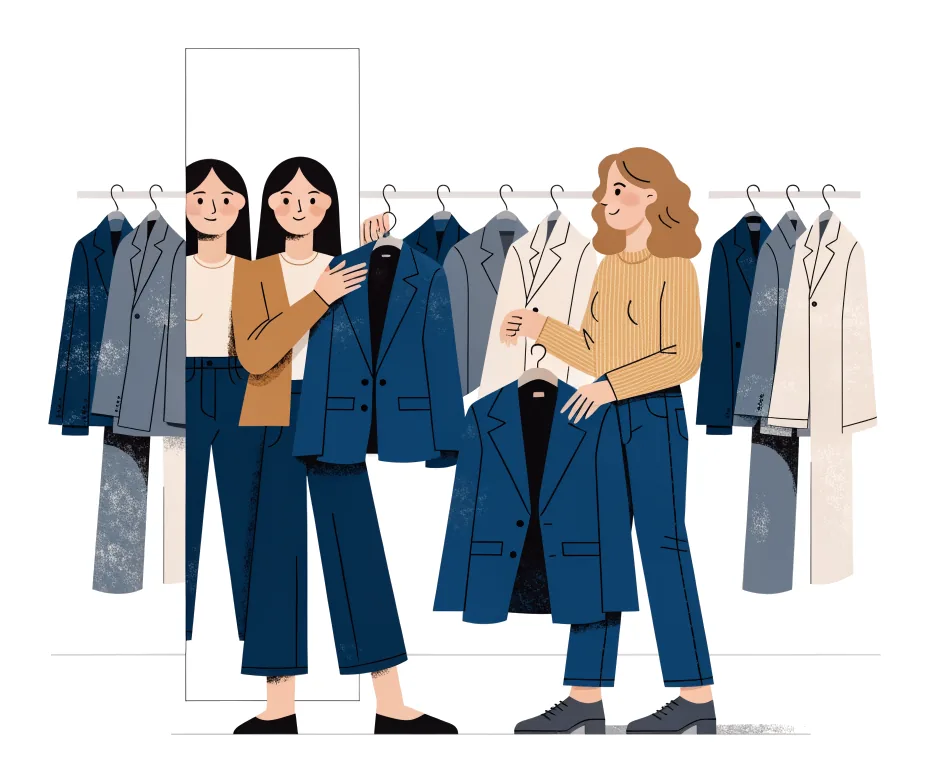
옷을 살 때는 치수와 색을 말하고, 마음에 드는지, 몸에 맞는지 말해야 해요. 친구나 동료의 선물을 함께 고를 때도 같은 말을 써요. 이 과에서는 '나에게, 너에게, 그에게'를 뜻하는 말을 배워요.
문법 mir, dir, Ihnen, ihm, ihr, Verben mit Dativ (gefallen, passen, helfen), welcher, dieser
과제대학친구 생일 선물을 같이 고르기
과제직장동료의 퇴직 선물을 팀에서 정하기
이 과를 마치면 가게에서 옷을 사고, 마음에 드는지와 맞는지를 말하고, 다른 사람과 선물을 정할 수 있어요.
이 과에서 쓸 말이에요. 눌러서 먼저 들어 보세요.
배우기 전에 먼저 해 보세요. 틀려도 괜찮아요.
가게에서 점원이 Kann ich Ihnen helfen?이라고 물어요. 무슨 뜻일까요?
Ihnen은 '당신에게'라는 뜻이에요. 점원이 손님을 돕겠다는 말이에요.
'그 재킷이 마음에 들어요'는 어떻게 말할까요?
마음에 드는 물건이 주어이고, 사람은 mir로 써요.
Lektion 4의 낱말 다섯 개를 다시 떠올려 보세요.
토요일 오후, 시내의 백화점이에요. Jiu가 재킷을 사려고 해요. Lena가 같이 왔어요.
들으면서 찾아보세요. Jiu는 재킷을 얼마에 사나요?
월요일 점심시간, 회사 휴게실이에요. 동료 Herr Braun이 다음 주에 정년퇴직해요. 팀이 선물을 정해요.
들으면서 찾아보세요. 팀은 Herr Braun에게 무엇을 선물하나요?
오전, 백화점의 남성복 매장이에요. Sora가 남편 Minho에게 줄 스웨터를 사러 왔어요.
들으면서 찾아보세요. Sora는 어떤 색 스웨터를 사나요?
세 대화를 듣고 답하세요.
처음 입어 본 재킷은 어땠나요?
Jiu는 재킷을 얼마에 사나요?
원래 값은 89유로인데 할인해서 69유로예요.
Jiu kauft auch einen Schal.
목도리는 이미 있어서 사지 않아요.
팀은 Herr Braun에게 무엇을 선물하나요?
Wie viel gibt jeder?
Markus kauft den Gutschein.
상품권은 Dohyun이 사고, Markus는 꽃을 사 와요.
Sora는 어떤 색 스웨터를 사나요?
Sora kann den Pullover 14 Tage umtauschen.
영수증이 있으면 14일 동안 교환할 수 있어요.
낱말 52개예요. 낱말이나 예문 앞의 단추를 누르면 소리가 나요. 명사는 der, die, das를 색으로 구분했어요.
die Kleidung 옷, 의류
Die Kleidung ist heute im Angebot.오늘은 옷이 할인 중이에요.
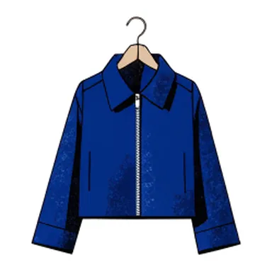
die Jacke, die Jacken 재킷, 점퍼
Die Jacke gefällt mir.그 재킷이 마음에 들어요.
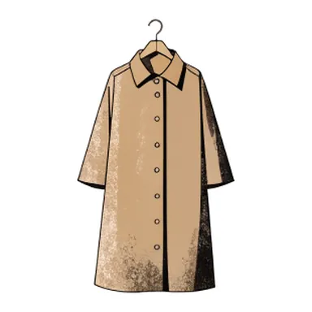
der Mantel, die Mäntel 외투
Der Mantel ist zu lang.그 외투는 너무 길어요.
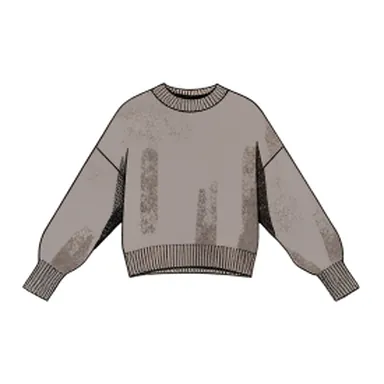
der Pullover, die Pullover 스웨터
Ich suche einen Pullover.스웨터를 찾고 있어요.
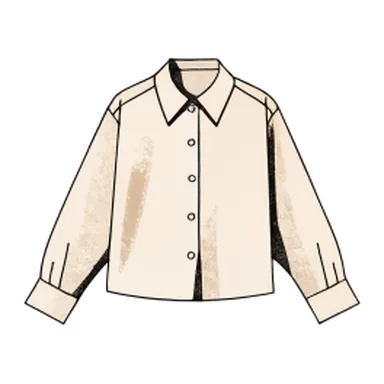
das Hemd, die Hemden 셔츠
Dohyun trägt ein Hemd.Dohyun은 셔츠를 입고 있어요.
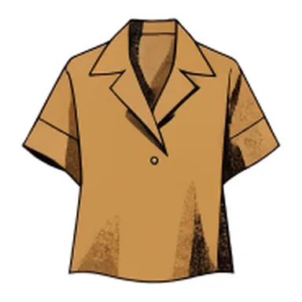
die Bluse, die Blusen 블라우스
Die Bluse ist schick.그 블라우스는 세련됐어요.
das T-Shirt, die T-Shirts 티셔츠
Das T-Shirt kostet zehn Euro.그 티셔츠는 10유로예요.
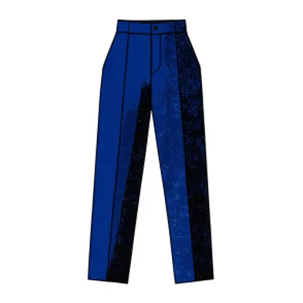
die Hose, die Hosen 바지
Die Hose passt mir nicht.그 바지는 저한테 안 맞아요.
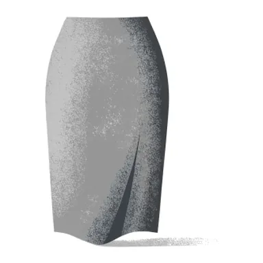
der Rock, die Röcke 치마
Der Rock ist zu kurz.그 치마는 너무 짧아요.
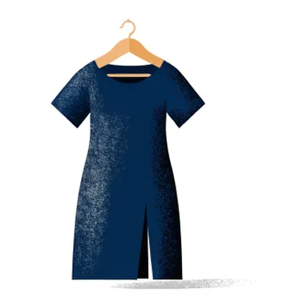
das Kleid, die Kleider 원피스
Das Kleid steht dir gut.그 원피스가 잘 어울려요.
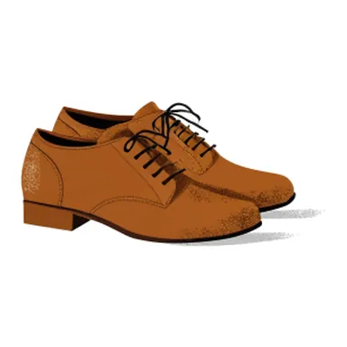
der Schuh, die Schuhe 신발
Die Schuhe sind bequem.그 신발은 편해요.
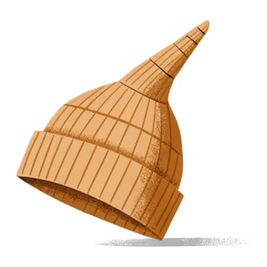
die Mütze, die Mützen (챙이 없는) 모자
Heute trage ich eine Mütze.오늘은 모자를 써요.
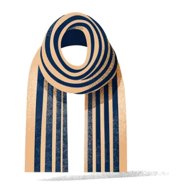
der Schal, die Schals 목도리
Dieser Schal ist schön.이 목도리는 예뻐요.
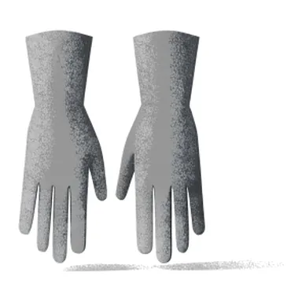
der Handschuh, die Handschuhe 장갑
Wo sind meine Handschuhe?제 장갑이 어디 있죠?
der Anzug, die Anzüge 정장
Im Büro trägt er einen Anzug.그는 사무실에서 정장을 입어요.
die Tasche, die Taschen 가방
Wem gehört diese Tasche?이 가방은 누구 거예요?
tragen (du trägst, hat getragen) 입다, 쓰다, 신다
Sie trägt gern Blau.그녀는 파란색을 즐겨 입어요.
anprobieren (hat anprobiert) 입어 보다, 신어 보다
Ich probiere die Jacke an.재킷을 입어 볼게요.
das Kaufhaus, die Kaufhäuser 백화점
Das Kaufhaus ist im Zentrum.백화점은 시내 중심에 있어요.
das Geschäft, die Geschäfte 가게
Das Geschäft ist in der Nähe.그 가게는 가까이에 있어요.
die Verkäuferin, die Verkäuferinnen 판매원 (여자)
Die Verkäuferin hilft mir.판매원이 저를 도와줘요.
die Größe, die Größen 치수, 사이즈
Welche Größe haben Sie?치수가 어떻게 되세요?
die Farbe, die Farben 색
Welche Farbe gefällt dir?어떤 색이 마음에 들어요?
die Umkleidekabine, die Umkleidekabinen 탈의실
Wo ist die Umkleidekabine?탈의실이 어디예요?
die Kasse, die Kassen 계산대
Die Kasse ist dort hinten.계산대는 저기 뒤쪽에 있어요.
der Kassenzettel, die Kassenzettel 영수증
Sie brauchen den Kassenzettel.영수증이 필요해요.
im Angebot 할인 중인
Die Jacke ist im Angebot.그 재킷은 할인 중이에요.
umtauschen (hat umgetauscht) 교환하다
Kann ich den Pullover umtauschen?이 스웨터를 교환할 수 있나요?
passen (hat gepasst) (치수가) 맞다
Die Jacke passt mir.그 재킷은 저한테 맞아요.
gefallen (es gefällt, hat gefallen) 마음에 들다
Die Farbe gefällt mir.그 색이 마음에 들어요.
Das steht dir gut. 잘 어울려요.
Blau steht dir gut.파란색이 잘 어울려요.
zu 너무
Die Hose ist zu klein.그 바지는 너무 작아요.
eng 꽉 끼는
Das Hemd ist zu eng.그 셔츠는 너무 껴요.
lang 긴
Der Mantel ist lang.그 외투는 길어요.
kurz 짧은
Der Rock ist kurz.그 치마는 짧아요.
bequem 편한
Die Schuhe sind sehr bequem.그 신발은 아주 편해요.
schick 세련된, 멋진
Der Anzug ist schick.그 정장은 멋져요.
schön 예쁜, 좋은
Das Kleid ist schön.그 원피스는 예뻐요.
das Geschenk, die Geschenke 선물
Wir brauchen ein Geschenk.우리는 선물이 필요해요.
schenken (hat geschenkt) 선물하다
Wir schenken ihm einen Gutschein.우리는 그분께 상품권을 선물해요.
der Geburtstag, die Geburtstage 생일
Lena hat am Samstag Geburtstag.Lena는 토요일이 생일이에요.
der Gutschein, die Gutscheine 상품권
Der Gutschein ist von der Buchhandlung.그 상품권은 서점 것이에요.
das Buch, die Bücher 책
Er liest gern Bücher.그는 책을 즐겨 읽어요.
die Buchhandlung, die Buchhandlungen 서점
Die Buchhandlung ist in der Nähe.서점은 가까이에 있어요.
die Blume, die Blumen 꽃
Ich hole die Blumen.꽃은 제가 사 올게요.
die Karte, die Karten 카드
Wir schreiben eine Karte.우리는 카드를 써요.
die Idee, die Ideen 생각, 아이디어
Hast du eine Idee?좋은 생각 있어요?
in Rente gehen 정년퇴직하다
Herr Braun geht in Rente.Herr Braun은 정년퇴직해요.
helfen (du hilfst, hat geholfen) 돕다
Kann ich Ihnen helfen?도와드릴까요?
gehören (hat gehört) ~의 것이다
Die Tasche gehört mir.그 가방은 제 거예요.
geben (du gibst, hat gegeben) 주다
Jeder gibt zehn Euro.한 사람이 10유로씩 내요.
bestimmt 분명히, 틀림없이
Das gefällt ihm bestimmt.분명히 마음에 들어 할 거예요.
이 과의 낱말로 여덟 문제를 풀어요.
줄을 누르면 소리가 나요. 색을 나타내는 말은 문장에서 Die Jacke ist blau.처럼 쓰고, 색 이름 자체를 말할 때는 Blau gefällt mir.처럼 대문자로 써요.
줄을 누르면 소리가 나요. zu는 '너무'라는 뜻이에요. 마음에 들지 않는 이유를 말할 때 써요.
규칙
gefallen, passen, helfen 같은 동사는 '누구에게'에 해당하는 사람을 Dativ로 써요. 인칭대명사는 Dativ에서 아래처럼 바뀌어요. 이미 배운 Wie geht es Ihnen?의 Ihnen과 Wie geht es dir?의 dir도 Dativ예요.
| Nominativ | Dativ | 뜻 |
|---|---|---|
| ich | mir | 나에게 |
| du | dir | 너에게 |
| er, es | ihm | 그에게 |
| sie | ihr | 그녀에게 |
| wir | uns | 우리에게 |
| ihr | euch | 너희에게 |
| sie, Sie | ihnen, Ihnen | 그들에게, 당신에게 |
주의 선물하는 문장에서는 받는 사람이 Dativ, 선물이 Akkusativ예요. Wir schenken ihm einen Gutschein. Ich schenke ihr Blumen. '누구에게'를 물을 때는 Wem?을 써요. Wem gehört die Tasche? – Mir.
규칙을 보고 바로 확인해 보세요.
손님에게 정중하게 물어요. Kann ich … helfen?
규칙
gefallen은 한국어와 주어가 달라요. 마음에 드는 물건이 주어이고, 사람은 Dativ예요. 그래서 동사는 물건에 맞춰요. 물건이 하나면 gefällt, 여럿이면 gefallen이에요. passen, stehen, gehören도 같은 짜임이에요.
| 주어 (물건) | 동사 | Dativ (사람) |
|---|---|---|
| Die Jacke | gefällt | mir. |
| Die Schuhe | gefallen | mir. |
| Der Pullover | passt | ihm nicht. |
| Blau | steht | dir gut. |
| Die Tasche | gehört | ihr. |
주의 '나는 그 재킷을 좋아해요'를 Ich gefalle die Jacke.라고 하면 안 돼요. Die Jacke gefällt mir.가 맞아요. helfen과 danken도 Dativ와 써요. Ich helfe dir. Ich danke Ihnen.
규칙을 보고 바로 확인해 보세요.
Die Schuhe … mir. 빈칸에 알맞은 말은 무엇인가요?
규칙
welcher는 여럿 가운데 어느 것인지 물을 때, dieser는 눈앞의 것을 가리킬 때 써요. 끝소리가 der, das, die의 끝소리와 같아요. 남성 명사가 목적어일 때만 -en이 돼요.
| Nominativ | Akkusativ | |
|---|---|---|
| der Pullover | welcher, dieser | welchen, diesen |
| das Kleid | welches, dieses | welches, dieses |
| die Jacke | welche, diese | welche, diese |
| die Schuhe | welche, diese | welche, diese |
주의 가리키면서 짧게 답할 때는 명사를 빼도 돼요. Welche Jacke? – Diese hier. 색과 치수는 in으로 붙여 말해요. die Jacke in Blau, die Hose in Größe 38.
규칙을 보고 바로 확인해 보세요.
… Kleid gefällt dir? das Kleid 앞에 알맞은 말은 무엇인가요?
듣고 알맞은 것을 고르세요.
Lena는 왜 신발을 사지 않나요?
Die Schuhe gefallen mir. Aber sie sind zu teuer.
스웨터는 얼마였나요?
Ich habe diesen Pullover gekauft. Er hat neununddreißig Euro gekostet.
neununddreißig는 39예요. 일의 자리를 먼저 말해요.
Markus는 딸에게 무엇을 선물하나요?
Mia hat am Samstag Geburtstag. Ich schenke ihr ein Fahrrad.
셔츠는 어떤가요?
Das Hemd passt mir nicht. Es ist zu eng.
Jiu가 신발 가게에 왔어요. 듣고 알맞은 것을 고르세요.
Im Schuhgeschäft
Verkäufer Guten Tag! Kann ich Ihnen helfen?
Jiu Ja, bitte. Diese Schuhe hier gefallen mir.
Verkäufer Welche Größe haben Sie?
Jiu Größe achtunddreißig.
Verkäufer Hier, bitte. Passen sie?
Jiu Nein, sie sind zu klein. Haben Sie die Schuhe auch in neununddreißig?
Verkäufer Ja, aber nur in Schwarz.
Jiu Schwarz ist gut. Ja, diese Schuhe passen. Ich nehme sie.
Jiu가 처음 신어 본 신발은 어땠나요?
Jiu는 어떤 치수의 신발을 사나요?
Welche Farbe haben die Schuhe?
백화점의 할인 안내예요. 읽고, 맞으면 richtig, 틀리면 falsch를 고르세요.
Angebote der Woche
| Was? | Farben | Preis |
|---|---|---|
| Jacken | Blau, Schwarz | 69 € |
| Pullover | Grau, Grün, Blau | 39 € |
| Hemden | Weiß, Blau | 25 € |
| Schuhe | Schwarz, Braun | 49 € |
Die Jacken gibt es in Blau und in Schwarz.
Ein Pullover kostet 49 Euro.
스웨터는 39유로예요. 49유로는 신발이에요.
Die Hemden gibt es in Grün.
셔츠는 흰색과 파란색이 있어요.
Zwei Hemden kosten 50 Euro.
한 벌에 25유로예요.
Die Schuhe gibt es in Braun.
알맞은 말을 고르세요.
Die Jacke gefällt .
그 재킷이 제 마음에 들어요.
Kann ich helfen?
도와드릴까요?
Herr Braun geht in Rente. Wir schenken ein Buch.
Herr Braun이 정년퇴직해요. 우리는 그분께 책을 선물해요.
Lena hat Geburtstag. Wir schenken Blumen.
Lena의 생일이에요. 우리는 Lena에게 꽃을 선물해요.
Wie geht es ?
어떻게 지내요?
Das sind Jiu und Lena. Die Wohnung gefällt .
Jiu와 Lena예요. 두 사람은 그 집이 마음에 들어요.
주어를 보고 알맞은 동사를 고르세요.
Die Jacke mir.
Die Schuhe mir nicht.
Das Kleid ihr gut.
Die Handschuhe mir nicht.
Wem die Tasche?
Die Bücher Herrn Braun.
welcher와 dieser의 알맞은 형태를 고르세요.
Jacke gefällt dir?
Mantel ist im Angebot?
Hemd passt dir?
Ich nehme Pullover.
Schuhe sind bequem.
Kleid steht dir gut.
앞의 말을 Dativ로 바꿔 빈칸에 쓰세요.
ich – Die Hose passt .
그 바지는 저한테 맞아요.
du – Das Hemd steht gut.
그 셔츠가 잘 어울려요.
er – Blau gefällt .
그는 파란색을 좋아해요.
sie – Ich helfe .
제가 그녀를 도와요.
Sie – Kann ich helfen?
도와드릴까요?
낱말을 순서대로 눌러 문장을 만드세요.
그 재킷이 마음에 들어요.
도와드릴까요?
우리는 그분께 상품권을 선물해요.
치수가 어떻게 되세요?
그 신발은 저한테 안 맞아요.
옷과 그 옷을 걸치는 몸의 부분을 짝지으세요.
빈칸에 알맞은 낱말을 쓰세요.
Welche haben Sie? – 38.
치수가 어떻게 되세요? – 38이에요.
Die Hose ist klein.
그 바지는 너무 작아요.
Sie brauchen den .
영수증이 필요해요.
Blau dir gut.
파란색이 잘 어울려요.
듣고 그대로 써 보세요.
Welche Jacke gefällt dir? 어떤 재킷이 마음에 들어요?
Die Hose passt mir nicht. 그 바지는 저한테 안 맞아요.
Wir schenken ihm einen Gutschein. 우리는 그분께 상품권을 선물해요.
Ich suche eine Jacke. 재킷을 찾고 있어요.
Haben Sie die Jacke auch in Größe 38? 이 재킷 38 사이즈도 있나요?
Haben Sie den Pullover auch in Blau? 이 스웨터 파란색도 있나요?
Kann ich die Hose anprobieren? 이 바지 입어 봐도 돼요?
Wo ist die Umkleidekabine? 탈의실이 어디예요?
Die Hose passt mir. 바지가 저한테 맞아요.
Sie ist zu klein. 너무 작아요.
Die Jacke gefällt mir. 그 재킷이 마음에 들어요.
Die Schuhe gefallen mir nicht. 그 신발은 마음에 안 들어요.
Wie findest du die Jacke? 이 재킷 어때 보여요?
Das steht dir gut. 잘 어울려요.
Ich nehme die Jacke. 이 재킷으로 할게요.
Was kostet das? 얼마예요?
Kann ich mit Karte zahlen? 카드로 계산할 수 있나요?
Kann ich den Pullover umtauschen? 이 스웨터를 교환할 수 있나요?
Was schenken wir ihm? 그에게 뭘 선물할까요?
Hast du eine Idee? 좋은 생각 있어요?
Vielleicht ein Buch? 책은 어떨까요?
Wir schenken ihr einen Gutschein. 그녀에게 상품권을 선물해요.
Das gefällt ihm bestimmt. 분명히 마음에 들어 할 거예요.
Wie viel gibt jeder? 한 사람이 얼마씩 내요?
Jeder gibt zehn Euro. 한 사람이 10유로씩 내요.
Wer kauft das Geschenk? 선물은 누가 사요?
Ich kann das machen. 제가 할게요.
과제 고르기
역할 대화와 말하기, 쓰기 과제는 대학 생활과 직장 생활 두 가지예요. 하나를 고르면 다음 과에서도 그쪽 과제가 나와요. 언제든 바꿀 수 있어요.
대화 A에서 역할을 하나 고르세요. 상대의 말은 음성으로 나오고, 내 차례에는 직접 말해요.
대화 B에서 역할을 하나 고르세요. 상대의 말은 음성으로 나오고, 내 차례에는 직접 말해요.
내 옷장을 떠올리고 칸을 채우세요. 옷은 Hosen und Pullover처럼 복수로, 색은 Blau, Schwarz처럼 대문자로 써요. 완성된 문장을 소리 내어 읽어 보세요.
Ich trage gern Hosen und Pullover.
Blau gefällt mir.
Ich habe Größe 38.
같은 반의 Carlos가 토요일에 생일 파티를 해요. Jiu와 함께 선물을 정해요.
Carlos는 커피를 즐겨 마셔요. 책은 잘 읽지 않아요. 내 생각은 카페 상품권이에요. 한 사람이 15유로씩 내면 모두 30유로예요. 카페가 가까이에 있어서 상품권은 내가 살 수 있어요.
같은 반의 Jiu와 Carlos의 생일 선물을 정해요. 쪽지를 보고 답하세요. 친구끼리는 du를 써요. 질문을 듣고 소리 내어 답한 뒤 예시 답과 비교해 보세요.
Carlos hat am Samstag Geburtstag. Was schenken wir ihm? Carlos가 토요일에 생일이에요. 뭘 선물할까요?
Ich habe eine Idee. Er trinkt gern Kaffee.
Stimmt! Oder schenken wir ihm ein Buch? 맞아요! 아니면 책을 선물할까요?
Nein, er liest nicht gern. Ein Buch gefällt ihm nicht.
Und ein Gutschein? 그럼 상품권은요?
Ja, gute Idee! Wir schenken ihm einen Gutschein für ein Café.
Wie viel geben wir? 얼마씩 낼까요?
Jeder gibt 15 Euro. Zusammen sind das 30 Euro.
Wer kauft den Gutschein? 상품권은 누가 사요?
Ich kann das machen. Das Café ist in der Nähe.
Eine Nachricht an den Kurs
같은 반 사람들에게 Carlos의 선물을 함께 하자는 메시지를 써 보세요. 다섯 문장이면 충분해요.
Hallo zusammen, Carlos hat am Samstag Geburtstag. Jiu und ich haben eine Idee: Wir schenken ihm einen Gutschein für ein Café. Er trinkt gern Kaffee. Jeder gibt fünf Euro. Wer möchte auch etwas geben? Schreibt mir bitte bis Donnerstag. Viele Grüße, Minji
다 쓴 뒤에 확인해 보세요.
같은 팀의 Frau Keller가 다음 달에 정년퇴직해요. 점심시간에 Markus와 선물을 정해요.
Frau Keller는 여행을 좋아하고 꽃도 좋아해요. 팀은 모두 여덟 명이고 한 사람이 10유로씩 내요. 내 생각은 기차 상품권과 꽃, 카드예요. 여행 가방은 너무 비싸요. 상품권은 내가 사고, 꽃은 Markus에게 부탁하고 싶어요.
동료 Markus와 Frau Keller의 퇴직 선물을 정해요. 쪽지를 보고 답하세요. Markus와는 du를 써요. 질문을 듣고 소리 내어 답한 뒤 예시 답과 비교해 보세요.
Frau Keller geht nächsten Monat in Rente. Was schenken wir ihr? Frau Keller가 다음 달에 정년퇴직해요. 뭘 선물할까요?
Sie reist gern. Vielleicht einen Gutschein von der Bahn?
Gute Idee. Oder eine Reisetasche? 좋은 생각이에요. 아니면 여행 가방은요?
Eine Reisetasche ist zu teuer. Wir haben nur 80 Euro.
Stimmt. Was gefällt ihr noch? 맞아요. 또 뭘 좋아하시죠?
Blumen gefallen ihr. Wir kaufen auch Blumen und eine Karte.
Wie viel gibt jeder? 한 사람이 얼마씩 내요?
Jeder gibt zehn Euro. Wir sind acht Kolleginnen und Kollegen.
Wer kauft das Geschenk? 선물은 누가 사요?
Ich kaufe den Gutschein. Kannst du mir helfen und die Blumen holen?
Eine E-Mail an das Team
팀 사람들에게 Frau Keller의 퇴직 선물을 알리는 메일을 써 보세요. 다섯 문장이면 충분해요.
Liebe Kolleginnen und Kollegen, Frau Keller geht nächsten Monat in Rente. Wir möchten ihr einen Gutschein von der Bahn und Blumen schenken. Sie reist gern. Jeder gibt zehn Euro. Bitte geben Sie mir das Geld bis Freitag. Vielen Dank! Viele Grüße, Minji Choi
다 쓴 뒤에 확인해 보세요.
Ich kann Kleidung kaufen und nach Größe und Farbe fragen.옷을 사고 치수와 색을 물을 수 있어요.
Ich kann sagen, was mir gefällt und was mir passt.마음에 드는 것과 몸에 맞는 것을 말할 수 있어요.
Ich kann mit anderen ein Geschenk aussuchen.다른 사람과 함께 선물을 고를 수 있어요.
Ich kann mir, dir, ihm, ihr und Ihnen benutzen.mir, dir, ihm, ihr, Ihnen을 쓸 수 있어요.